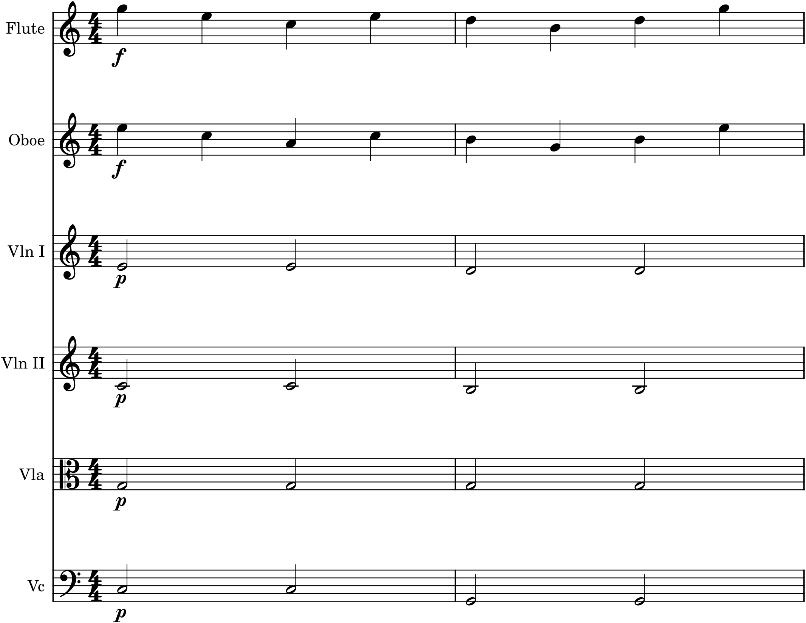

We have reached the point where the threads come together. You know the instruments and their ranges (Part 6); you know textures (Chapter 36) and balance (Chapter 37); you know how to write good lines, harmony, and form. This chapter puts all of it to work on a concrete, achievable target: scoring a piece for a chamber orchestra — a small orchestra of a dozen or two players — on a real MuseScore template. It is the last stop before the Capstone, and its aim is practical: to show you how the whole process actually runs, from opening a template to a finished score.
38.1Why a chamber orchestra
We deliberately aim at a chamber orchestra rather than the full symphony orchestra, and the choice is pedagogical. A chamber orchestra — strings plus a handful of winds, perhaps a pair of horns — is small enough to hold in your head and to balance without exotic knowledge, yet it is a real orchestra, capable of real orchestral music. It is the ensemble of a great deal of the repertoire, and it is exactly the right size to learn on: every principle in this book applies to it directly, and nothing about it exceeds the intermediate ceiling we have kept throughout. Master the chamber orchestra and the larger orchestra is only more of the same thinking, not different thinking.
A typical chamber-orchestra roster is: the strings (first and second violins, violas, cellos, and double basses) as the foundation; a few woodwinds (flute, oboe, clarinet, bassoon — often in pairs); and sometimes a pair of horns or a trumpet. That is a manageable palette — a handful of colours, all of them familiar from Part 6 — and it is all you need to write full, satisfying orchestral music.
38.2Starting from a template
The single best practical decision you can make is to start from a template rather than building a score from scratch. MuseScore ships with orchestral and string-orchestra templates (File ▸ New), and starting from one gives you, for free, everything that is tedious and error-prone to set up by hand: the instruments in standard score order (winds at the top, brass below, then percussion, then strings at the bottom), each with its correct clef, each transposing instrument already set to transpose correctly (Chapter 32), and sensible staff sizes and spacing. You begin, in other words, with a correct orchestral page and simply write music into it. Never assemble a score staff by staff if a template will do it for you.
38.3A worked excerpt
Here is a short chamber-orchestra tutti that brings the book’s principles together on one page.

Read Figure 38.1 as the sum of the whole book. The melody is a good line (Part 3), given to two winds in parallel thirds for a fuller, more expressive foreground (Chapters 29, 34) and marked f. The accompaniment is a clean four-part string harmony (Parts 2, 5), voiced open with the bass low and alone and the upper tones stacked above (Chapter 34), and marked p so it stays behind the tune (Chapter 37). The texture is melody-and-accompaniment (Chapter 36); the colours are chosen — reedy winds in front, warm strings behind (Chapter 35); the registers keep each part clear (Chapter 33). Nothing here is beyond you; it is simply everything you already know, assembled.
38.4A working order
Scoring a piece is far easier if you work in a sensible order rather than trying to decide everything at once. A reliable sequence:
- Choose the ensemble and open the matching template.
- Lay in the structure first — the melody and the bass, the outer voices that define the piece — on suitable instruments, before filling anything in.
- Add the inner harmony, distributing the middle voices across the remaining instruments in good registers and open spacing.
- Decide the texture and colour for each passage — who has the melody, who accompanies, where to double for strength or blend (Chapter 34).
- Balance it with dynamics, numbers, and register (Chapter 37).
- Play it back, listen, and revise — the step that matters most, and the one only software makes easy.
Work outside-in and section-by-section like this and a full score, which looks overwhelming as a blank page of many staves, becomes a series of small, familiar decisions.
38.5Practical cautions
A few reminders keep a chamber score sounding clean. Respect the ranges (Chapter 33): keep every part within its instrument’s comfortable range and out of its weak registers — the template and MuseScore’s range colouring both help you here. Mind the transposing instruments (Chapter 32): let the template handle the transposition, write at concert pitch with Concert Pitch toggled on, and trust the parts to come out right. Keep the low-middle clear (Chapter 37): do not crowd the muddy region; open the bass and spread the harmony up. Don’t use everyone all the time: the tutti means most when it is saved, so let instruments rest, and vary who plays to shape the texture and the form (Chapters 35, 36). Restraint, more than any single technique, is what makes a small orchestra sound like a good one.
38.6Toward the Capstone
You now have not only the principles of orchestration but a procedure for applying them: choose the ensemble, start from a template, lay in structure then harmony, choose texture and colour, balance, and revise by ear. That is genuinely how orchestral music gets written, and it is entirely within your reach for a chamber orchestra. The next chapter turns to the greatest teacher of all — real scores by real composers — and then the Capstone asks you to do the thing itself: take a piece you have already written and orchestrate it, fully, for a small orchestra of your own choosing.
In MuseScore
This chapter is best learned by doing it in MuseScore from a template, exactly as a working orchestrator would.
- Open a template (File ▸ New) — the String Orchestra or a small Orchestra template — so the instruments arrive in standard score order, correctly clefed and transposed.
- Toggle Concert Pitch on while composing so you read and enter everything at sounding pitch; toggle it off to see the transposed parts the players will read (Chapter 32).
- Work outside-in: enter the melody and bass first on chosen instruments, then fill the inner harmony across the others, as in Figure 38.1.
- Balance with dynamics (melody f, accompaniment p) and the Mixer (F10), and play it back constantly — soloing and muting parts to check that each is clear and the melody stays in front.
- Generate the parts (File ▸ Parts) when the score is done, and MuseScore will lay out a correct, transposed part for each player automatically.
Try it: take a short piece you have already written — a melody with accompaniment, or a quartet from Part 5 — open a chamber-orchestra template, and score it, working outside-in: melody and bass first, then inner voices, then texture, colour, and balance, playing back at every step, as in Figure 38.1. You will produce a real orchestral score, and discover that it is not a new and forbidding skill but the assembly of everything this book has taught. That assembly, on a piece of your own, is the Capstone.